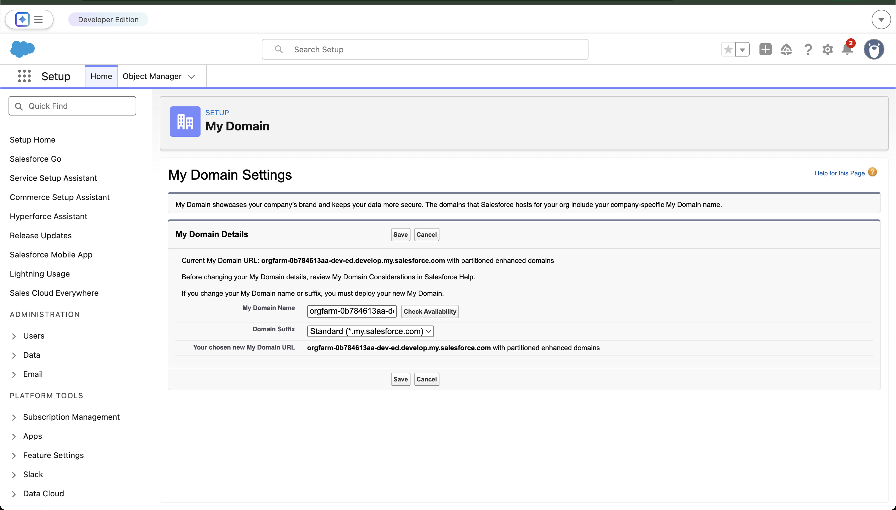
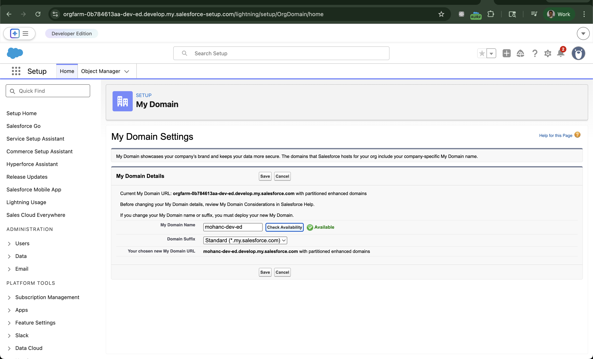
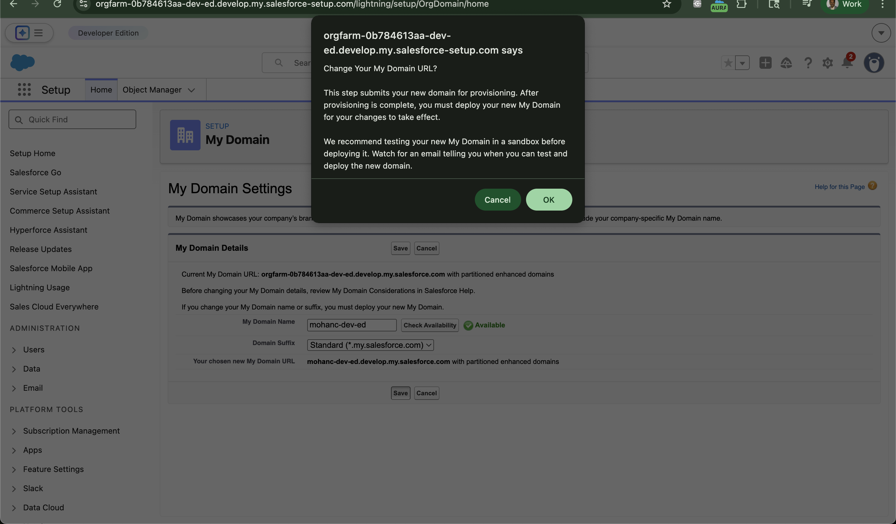
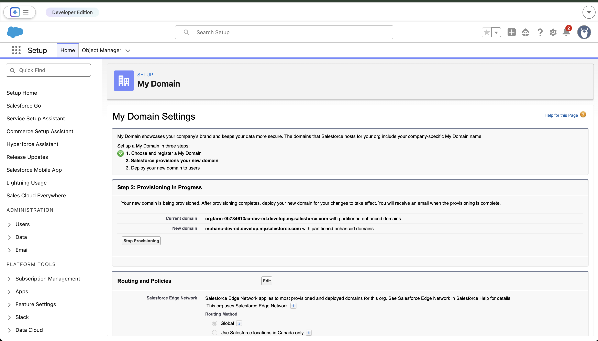
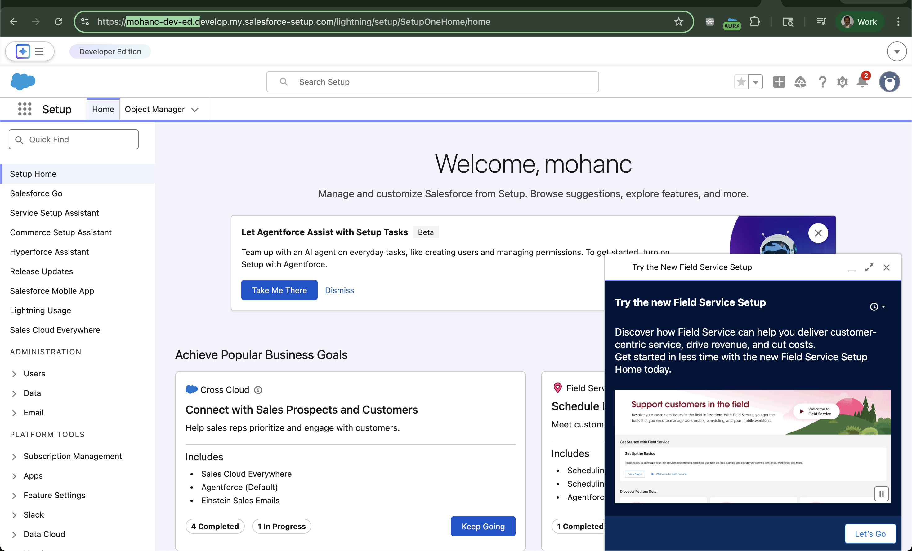

Custom Domain Strategy and Instance URL Management in Salesforce
This document explains how organizations can implement branded access URLs for Salesforce environments using My Domain and custom DNS configurations. It also discusses architecture, security implications, and integration best practices.
Organizations implementing Salesforce often want branded login URLs instead of generic instance addresses such as:
https://na123.salesforce.com
Using My Domain allows companies to create stable and branded URLs that improve user experience and simplify integrations.
Salesforce instances are dynamically assigned by the platform infrastructure. These instance names (e.g., NA, EU, AP clusters) cannot be changed by customers.
Challenges include:
My Domain allows organizations to create a unique subdomain.
https://acme.my.salesforce.com
Benefits include:




Email confirmation sent to with this content: Your Salesforce My Domain is mohanc-dev.develop.my.salesforce.com is ready for testing. To deploy it, log in to https://mohanc-dev.develop.my.salesforce.com and go to My Domain in Setup.

Organizations can configure DNS to expose Salesforce through corporate domains.
Example:
crm.company.com
crm.company.com → acme.my.salesforce.com
Applications integrating with Salesforce should avoid hardcoding instance URLs.
Recommended configuration:
const instanceUrl = "https://acme.my.salesforce.com";
fetch(`${instanceUrl}/services/data/v60.0/`)
Users
│
▼
crm.company.com
│
▼
DNS CNAME
│
▼
acme.my.salesforce.com
│
▼
Salesforce Platform
Implementing My Domain and custom DNS domains provides a stable, secure, and branded entry point for Salesforce applications.
Organizations should standardize on My Domain URLs for all integrations, APIs, and user access to ensure long-term platform stability.